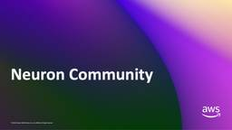
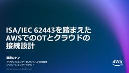
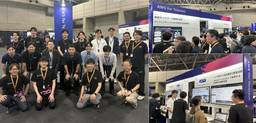
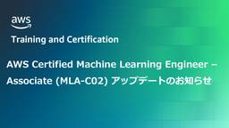
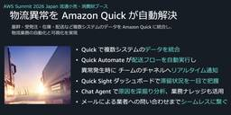
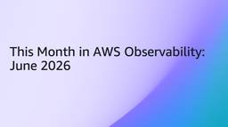
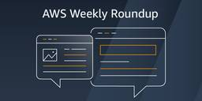
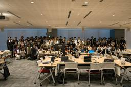

Amazon Web Services ブログ
フィード

【開催報告】Neuron Community – 2026 Vol.1 1
1
Amazon Web Services ブログ
2026年7月15日 (水) に開催された「Neuron Community - 2026 Vol.1」の様子をレポートします。このイベントは、「Neuron Community」の協力のもと開催しました。Neuron Community は、ユーザー間で AWS Trainium / AWS Inferentia エコシステムに関する情報や知見の共有を促進するための場として発足したものです。今回は、AWS Summit Japan 2026 開催後ということもあり、AWS Summit Japan の振り返りや、AWS Neuron のアップデート情報が多めの内容となりました。
7時間前

ISA/IEC 62443を踏まえたAWSでのOTとクラウドの接続設計 1
Amazon Web Services ブログ
本記事では、製造業のお客様が OT をクラウドに接続する際に特に重要となるISA/IEC 62443 の様々な概念を、AWS サービスを使ってどのように実現するのかをご紹介します。お客様は、AWS サービスを活用した製造現場向けのクラウドアーキテクチャを構成することで、ISA/IEC 62443 に沿ったクラウド側のセキュリティ対策を実装できます。
9時間前

【開催報告】AWS Summit Japan 2026 – AWS for Telcom 展示ブース
Amazon Web Services ブログ
2026 年 6 月 25 日(木)、26 日(金)の 2 日間にわたって幕張メッセで開催された AWS Summit Japan 2026 では、AWS Expo の Industry Zone に「AWS for Telecom」として通信業界に関する展示ブースを出展しました。
13時間前

AWS Certified Machine Learning Engineer – Associate アップデート (MLA-C02) のお知らせ 1
Amazon Web Services ブログ
AWS Certified Machine Learning Engineer – Associate が MLA-C02 にアップデートされます。生成 AI、エージェンティック AI、基盤モデル / LLM、Amazon Bedrock のカバレッジが追加され、進化する ML エンジニアの役割に対応します。ベータ版試験（英語のみ）の受験予約は 2026 年 9 月 1 日開始、現行版 (MLA-C01) の英語での最終受験日は 9 月 28 日です。日本語を含む他言語は、ベータ期間中も現行版で引き続き受験可能です。全言語対応の標準版 MLA-C02 は 2027 年初頭に提供予定です。
17時間前
スマートグラス × 音声 AI エージェントで実現する店舗業務のハンズフリー支援 1
Amazon Web Services ブログ
AWS Summit Japan 2026 で展示した「スマートグラス × 音声 AI エージェント」による店舗業務支援デモを紹介します。Amazon Nova 2 Sonic と Amazon Bedrock AgentCore Gateway を中核に、声で話しかけるだけで AI が音声と AR 表示で即答する体験を、システム構成や技術的なポイントとともに解説します。
2日前

【開催報告】AWS Summit Japan 2026 — 物流異常を Amazon Quick が自動解決：配送在庫の異常検知〜問合せまで一気通貫 1
Amazon Web Services ブログ
物流の現場では、基幹・受発注・在庫・配送など複数のシステムにデータが分散しています。今回の展示では、Amazon Quick がこれらの課題をどのように解決するかを、実際の業務シナリオに沿ってデモでお見せしました。皆さまの物流現場でも、こんな課題はありませんか？
2日前

今月の AWS オブザーバビリティ – 2026年6月
Amazon Web Services ブログ
「This Month in AWS Observability」最新号へようこそ。今回は、この6月に Amazon CloudWatch と AI 駆動型オペレーション全般で発表された新機能をご紹介します。CloudWatch でネイティブな OpenTelemetry メトリクスと PromQL クエリが一般提供（GA）となり、より深い統計・構造化分析のための 23 個の新しい Logs Insights コマンドがローンチされ、CloudWatch RUM に Session Replay が登場し、 AWS DevOps Agent では MCP および Agent-to-Agent プロトコルをサポートするカスタム SRE エージェントがリリースされました。EKS クラスター全体で GPU コストを配賦する場合も、実際のセッション再生でフロントエンドの問題をデバッグする場合も、チームのランブックを自律型 SRE エージェントに組み込む場合も、役立つ情報が見つかるはずです。
2日前
AWS Japan Summit 2026 スマートマシンデモ ー自律診断とリアルタイム安全監視ー 展示報告 1
Amazon Web Services ブログ
はじめに 2026年6月25日、26日に幕張メッセで開催された AWS Summit Japan 2026にお […]
2日前

AWS Weekly Roundup: ワンクリック Lambda セットアッププロンプト、Bedrock での OpenAI GPT-5.6 モデルなど (2026 年 7 月 20 日) 1
Amazon Web Services ブログ
2026 年 7 月 20 日週、私のチームは AWS Korea User Group (AWSKRUG) […]
2日前

9 社合同 AI-DLC Unicorn Gym：AI と作った 2 日間で見えた、 「書く」から「決める」への転換 1
Amazon Web Services ブログ
2026 年 6 月、事業ドメインの異なる 9 社 11 チーム・約 90 名が一堂に会し、Kiro と Claude Code を使って自社の実課題に挑む AI-DLC Unicorn Gym を合同開催しました。動くものを見ながらビジネスと開発がその場で会話する 2日間を通じて、多くのチームが「開発の主役が書くことから決めることへ移る」という手応えを掴み、参加者アンケートでは満足度 4.7/5・平均 74% の工数削減という結果につながりました。各チームが持ち込んだテーマ、成果発表のハイライト、そして率直なお客様の声まで、合同開催だからこそ見えた 2 日間をレポートします。
2日前